April 2018. I’m walking into Staples to print out some concert tickets in Union Square. I was waiting for my friend to join me, but she’s always running a little late – it’s all good. Staples was mad slow anyway. As I’m printing my shit, a lady of about my height, brown hair, and panicked eyes walks up to me. If you know me, you know I’m a magnet for weird occurrences, and I just roll with it. Why not? Actually, my therapist would probably give me a few reasons as to why not, but that’s for another story.
Back to the lady. She was carrying a duffle bag and maybe a suitcase, I can’t remember. She was definitely camping out at the Staples – she said she was waiting for something. Aight, so was I. Let’s talk. She talked about bits of her life that I had absolutely no interest in, yet I pretended to listen. Strangers love telling me about their lives, and quite honestly, I appreciate that. I just might not remember it. That is also why I’m the best secret keeper on Earth.
I love secrets.
Anyway, she asked me about a phone issue she was having. I don’t know shit about phones, especially iPhones with their shitty user interfaces. She told me there was somebody spying on her through it, and she could prove it. For about 5 minutes, she showed me that every time she tried unlocking her phone, it bugged out a little. Honestly, it looked like her phone just had some water damage, which she probably couldn’t fix. She showed me several videos of ‘evidence’ and even a couple of recordings of weird voicemails she received. I thought, fuck, somebody’s after this woman. At this point, I was invested. I tried figuring it out with her; why was somebody spying on her?
Then, it clicked. Nobody’s spying on her. She probably just has schizophrenia or a paranoid personality disorder. This was my first experience with a human experiencing this degree of paranoia. It made sense why she had all her bags on her. She was probably running away. No clue where she was going, but she wanted to make sure I knew she was alright. She gave me her number so she could let me know the next time she got a weird voicemail. As she was typing it into my phone, I finally learned her name – Janice. I still got her contact as ‘Janice Staples.’ The name is very fitting.
I never heard from her again, although I did text her once. She didn’t answer – probably got rid of her phone. My therapist said not to do that again though, oops. Janice, I hope you’re alright and flourishing.
There’s no moral to this story; I just think about her sometimes.
I hate that question, and I know it’s selfish. How dare people ask about my well-being? It’s also hypocritical because I ask it all the time. It’s comforting to ask happy people and hear a relatively normal answer. The thing is, if you’re depressed, that question sets you up for failure no matter how you answer. Here are the options.
“Great, thanks for asking.” I know that’s a lie, and I hate lying. I’ve been perpetually sad since I was 5 – I still haven’t gotten the patch update that changes that. Maybe next year when the new iPhone comes out and they start chipping people.
“Shitty.” Brutal honesty. Now it’s awkward. You say you’re sorry, and I say it’s okay. One of us changes the subject. I feel responsible for this negative interaction. You might ask why, but I don’t know why. Through a combination of genetics, environmental circumstances, and life decisions, it’s just always been shitty.
“Not bad. How are you?” The implication is that I’m not great, but I can quickly change the subject by throwing it back to you. You’ll be busy talking about yourself, so my vague response gets overlooked. Maybe it comes off as inviting, and you can share your struggle too.
“Oh, I’ve been super busy.” I hate this response, but it’s the most common and useful. Let’s call it the Ivy League kid response. There’s no time to talk about feelings when you’re busy skipping class and stealing answers from the internet. It’s all due to the fact that we think we need to be busy to be productive, and we get so involved in the concept of busyness we forget about everything else.
Lastly, “Wanna hear something crazy?” This is a fun one. It takes the focus away from me, we’re still bonding, and I get to tell one of my many stories. This is usually the route I take – it’s entertaining for both of us. The downside is we completely ignored the question, and neither of us knows how the other’s doing.
At this point, you’re probably asking, “What can I ask you?” Anything else. I’m not that picky. Controversial, but I quite like, “Are you okay?” A quick yes will settle it. A no is welcome, but not necessary. Simple.
Does it matter that much? No, it really doesn’t.
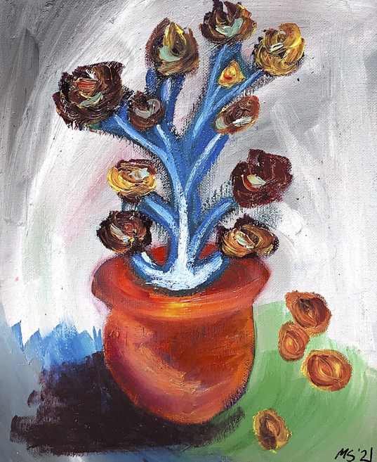
After graduating high school, I flew directly to NYC. I didn’t know a single soul, so I spent most of my days commuting to Union Square and walking around. This was back in the day when I frequently read for pleasure, or as many would call it, the “pre-college era.” College really takes the life out of you like that – or maybe it was just the Ivy experience.
Anyway, I bought a couple of books from some man’s stand, one of the books being Dante’s Inferno. This particular copy was raggedy and foxed. Honestly, it looked quite golden. It was beautiful.
I was walking down St. Mark’s Place when an old man stopped me. He looked at the books in my hand, then started reciting the first page of Dante’s Inferno in English, then in Italian. I wish I could give you a vivid description of what he looked like, but I don’t remember. Just picture him as an average white, old man. He introduced himself as Frank, a former professor of I don’t remember where. After some small talk that I also do not remember, he offered to sell me a book for one dollar. He boasted about the library in his apartment, housing over one thousand books. Of course, I said yes. Frank starts climbing up his stoop and motions me to follow him. Stranger danger? Never heard of it. I followed him inside.
This apartment building was crummy. Shit looked ancient, just like Frank. As I reached the bottom of his staircase, I realized I probably shouldn’t follow this elderly stranger into his home. I weighed the pros and cons in my mind. Pros – I could get to see the thousands of books he mentioned. Cons – possibly getting murdered. I decided I would just visit the New York Public Library if I really wanted to see multitudes of books on shelves.
I was ready to sacrifice my life for this one-dollar novel, even though I knew I’d probably never read it. I remember thinking, “Damn, this is where I die. Fine.” Evidently, I did not, but that is a sentence I’ve said to myself quite a few times.
After a few minutes, Frank came back downstairs, and we concluded our business transaction. I don’t remember the title of the book, nor did I ever read it. I do, however, think of Frank every time I’m in a near-death situation. Maybe he’s my Virgil.
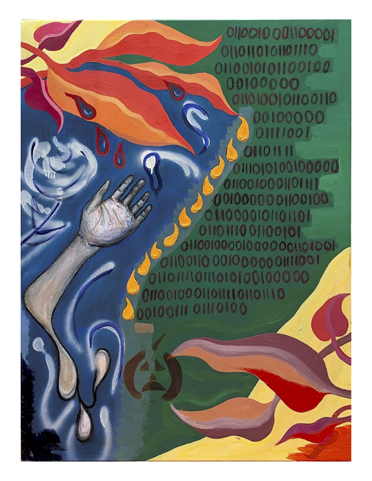
Well, well, well. Look who needs assistance with their mental health. Me. You, too? Shit, you should’ve just said so. I’ve seen a few different therapists over the years and have some tips to offer.
Advice #1: Don’t pick a hot one.
It’s really difficult to tell another human, a stranger at that, the inner workings of your mind when all you can think about is shagging them. You definitely won’t want to tell them about embarrassing moments or insecurities if their beautiful face is staring back at you. You don’t have to pick an ugly psychologist, just one you won’t feel sexually attracted to.
Advice #2: Verify that they’re legit.
Yes, I’ve encountered an individual who claimed to be a clinical psychologist when they did not possess that qualification. It (apparently) happens – maybe just to me. Either way, confirm that they’re licensed and can assist you. There are mental health counselors, psychologists, and psychiatrists. They’re trained to handle different situations. Look into all of them and decide which would be best for you and your needs.
Advice #3: Make sure they’re cool.
There’s nothing worse than a shitty therapist. You have to feel them out the first few sessions and see what they’re about. Are they homophobic? Next. Not funny? Next. Do that thing where they leave their mouth open all of the time? Next. Just make sure you find one you vibe with and could see yourself establishing a long-term professional relationship with. Don’t forget – they’re not your friend. They don’t have to be the coolest motherfucker on earth. They just have to make you feel comfortable.
Advice #4: Check their rates.
Therapy can be fucking expensive. Depending on your insurance, you might just have to pay a small copay fee. If you don’t have insurance, the cost per session could be anywhere between $10 and $200. BetterHelp offers affordable therapy but is provided by mental health counselors and not psychologists. Some cities have mental health clinics that offer affordable psychologists but depend on the state. If you’re a college student (undergrad or grad), your university may have free or very affordable psychologists available.
Advice #5: Be receptive.
They’ll be nice and comforting. They’ll also shit on you sometimes. You’re not perfect – actually, you’re fucked up, just like everyone else on this planet. You’re not going to like what they say sometimes. Shit, it took me two and a half years to open up to my college therapist. Sometimes he’d say some shit, and I would just get tight. He had a valid point, though. I just had to let my stubborn ass think and process. Most importantly, if you’re looking to get a therapist, make sure you want and are ready to heal and grow. It’s not easy to ask for help and actively work on yourself. It takes a lot of courage to be open and vulnerable. If you got the balls to do so, go to therapy. If we were to personify disappointment, it would be that one cousin that you have to hang out with at holiday parties out of pity. He also kind of smells, but not enough where you feel inclined to tell them. You know what I mean.
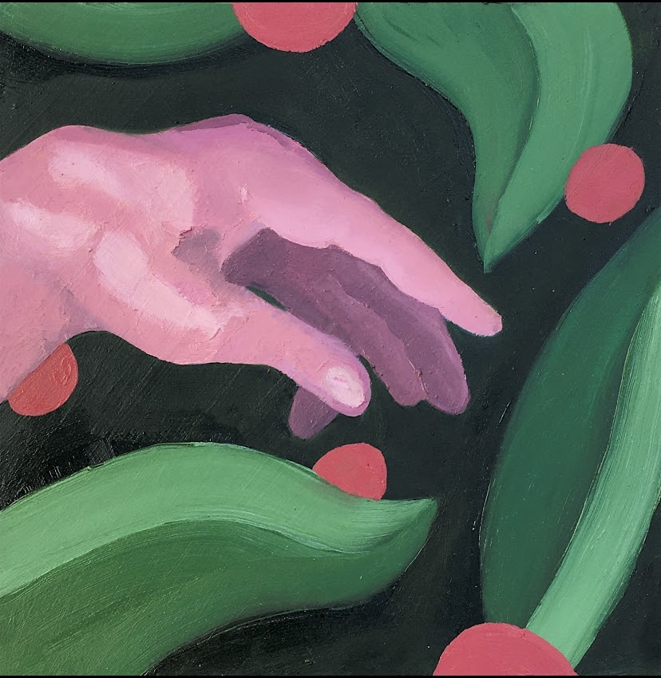
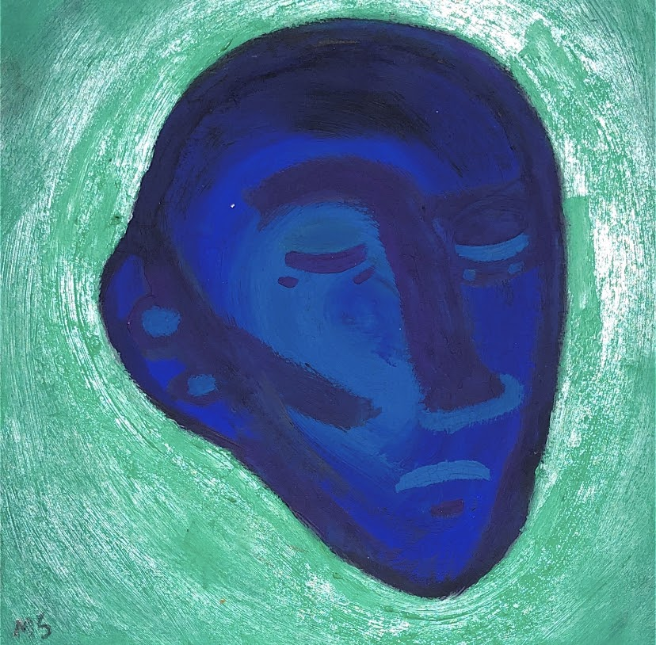
Let’s say somebody disappoints you. Whether it’s a shitty date, or the McDonald’s employee putting too much mayo on your Mcchicken, you have a right to feel disappointed. Now, the important part is knowing when to express your disappointment. Are you disappointed because you took some shit personally, or because it was objectively disappointing? In the Mcchicken scenario, I took that shit personally, but I would most likely never complain about it. I’ll still keep fucking buying Mcchickens. Don’t judge my choice of a fast-food chicken sandwich; that’s not what this is about.
Beyond dollar menu sandwiches, being disappointed by another individual sucks ass. We don’t talk about the feeling of disappointment enough. Anger, sure. Sadness, sure. Disappointment? That shit hurts more than the other feelings at times. I don’t fully believe in ‘negative’ emotions. If you’re properly expressing yourself and processing your feelings, there’s no reason as to why any emotion you feel should be considered negative. Increasing your emotional intelligence is always positive, and even shitty feelings can be a positive experience.
Your friend or date or whoever disappoints you by acting stupid. What are you going to do, stay quiet? Let it happen again? Ghost? Nah, man. Express yourself. “Hey, Bobby, I felt X way when you did X thing. Can we talk about it?” A lot easier said than done, but nothing’s ever fucking easy. Man up, dude. Are you scared of talking about your feelings? That’s some cowardly shit. If they’re receptive, cool. If they’re not, get the fuck out of there.
I know you’re wondering, “how can I improve my emotional intelligence? I am terrified of ever communicating and would prefer to live in a shadow of potentially positive relationships and stay surrounded by emotionally immature humans, so we never have to be vulnerable.” How did I read your mind? Okay, I didn’t, but I have been snooping around your mind, and we got some spring cleaning to do up here—one obstacle at a time.
Let’s take Gross’ (1998) five points of focus in the process of regulating your emotions. First, situation selection. Having the self-control, or self-awareness, to choose whether to enter a situation or approach an individual. Is this situation going to disappoint me? Do you know yourself well enough to know? Figure it out.
You made the wrong choice, or you couldn’t control it, and some shit happened. Now, the second point of focus is situation modification. Try your best to find a quick solution and change the situation for the better. Dropped your pizza? Before you get pissed, just pick it up within 5 seconds. Avoid an emotional impact.
Fuck. We can’t modify the situation. You dropped the damn pizza in a puddle. The third point of focus is attentional deployment. Distract yourself if you can. Text a friend, check your Insta feed. You could also concentrate on something else long enough to forget about this emotional trigger. You could also ruminate, but that’ll fuck you up even more. Don’t ruminate.
That shit didn’t work. Now we face the point of focus four, cognitive change. Try to turn it around by twisting your mindset. You didn’t need that pizza. Honestly, it was ass.
Lastly, response modulation. Influencing how you respond to the emotions you’re currently feeling. Coping mechanisms vary greatly, and choosing a healthy one is so fucking hard. Try your best anyway. Mine is Mcchickens, but you already know how that can restart this whole cycle of emotional regulation for me.
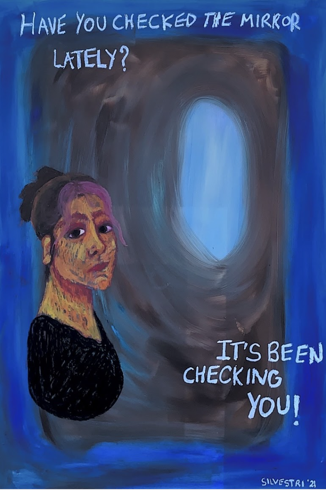
According to encyclopedia.com, etiquette is a set of rules when dealing with the outside world, and manners are the expression of inner character. Emily Post stated that manners are common sense, and etiquette is its language. I don’t know much about her, but she was the etiquette expert.
If manners are an expression of your character, why are their rules along with them? What if your character is inherently chaotic? Wouldn’t etiquette go against your expression? If manners are common sense, doesn’t that mean they can’t truly be taught?
Let’s reel it in and discuss my manners and etiquette. I was, in fact, placed in a manners and etiquette course around the age of 12. I don’t know if there was anything explicitly wrong with the state of my manners at the time, but my mom enrolled me. You can’t really say no to Hispanic moms – don’t even try. I think I only attended one class anyway. They probably realized I was a lost cause.
They taught me how to set the table – as in folding napkins and positioning tiny forks. If you’ve ever met me, you know I cannot give a singular fuck about how a table is set. I can’t. I don’t particularly worry about table settings as long as the food and company are good. Needless to say, I don’t remember anything else from this course. I repressed that shit.
My etiquette, if we’re following tradition, is poor. I burp quite often, I don’t sit on chairs properly, and I’m too blunt. Changing my ‘expression of inner character’ would mean I’m not being true to myself, which would mean I’m being dishonest. Doesn’t dishonesty go against the rules of etiquette? This is the paradox, etiquette and manners are self-contradictory. I should be encouraged to express my inner character, but it goes against a lot of what etiquette stands for. It’s a vicious circle. Doesn’t matter much to me anyway. I’m a take-me-as-I-am kind of girl.
Now, would Emily Post be proud? Definitely not.
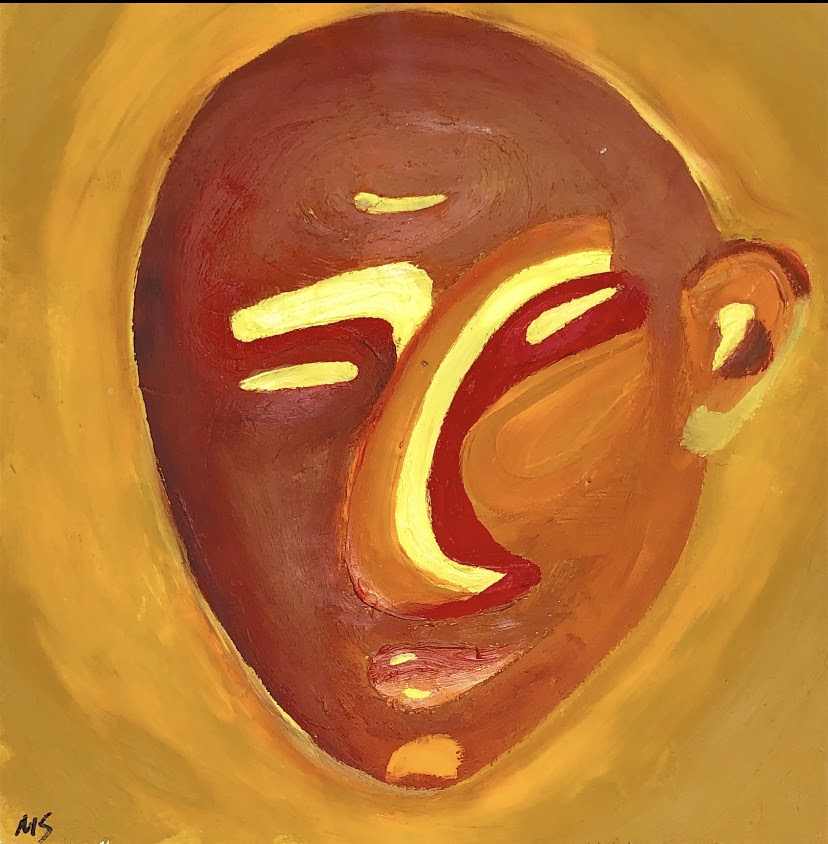
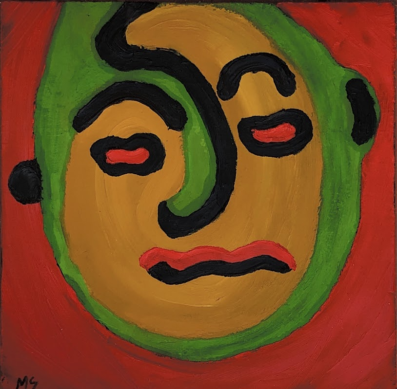
You really aren’t, and that’s a good thing. Let me tell you why, and a few other things that count as free therapy. What can I say? I’m a giver.
Despite what every other woman trying to sell you shampoo or workout clothes on Instagram is trying to tell you, you’re not that influential. Your effect on others is not significant enough to affect every aspect of their existence. Their actions, thoughts, feelings, and reactions (usually) have very little to do with you. Is someone being really rude? Probably not your fault or problem (unless you outright said/did something offensive). Don’t take it personally; it’s not about you. You’re not that important.
Realizing you barely matter to others will open up your schedule and allow you to focus on worrying about what you think of yourself. Do you like yourself? Would you take the time out of your day to hang out with you? Are you enough to fill the void within you and enjoy your solitude? These are the questions you should focus on instead of on whether Tyler sounded “off” over text last night or not. Let go of your ego – most of the time, you’re simply reacting due to your hurt ego, not an actual offense. Your ego is getting between you and healthy relationships. It feeds on fear and anxiety. As Sigmund Freud stated, the ego defends itself vainly. Whether you agree with Freud’s other work or not, he has a point. Read more about it here.
How do we go about this?
First, realize that there is probably a lot that you do solely to fill the void and avoid your own thoughts. Whatever your avoidance technique may be (fucking, arguing, dismissing, etc.), you gotta find a counter-technique that adds value instead of attempting to escape. You know exactly what I’m talking about. I don’t wanna hear, “oh, but I can’t stop it.” Shush. Develop grit and self-control. Get your shit together. Identify the defense mechanisms you use when your ego is triggered. Isolating those and tracing them back to childhood trauma instances will help you process said trauma and resolve these poor defense mechanisms. You’re also not the only one – everyone in your life needs to do this. Some may not realize it yet.
Getting your shit together
Usually, you’re the one driving yourself into a negative spiral and causing your own self- destruction. If other people in your life are causing chaos, try to get rid of them. If you’re in circumstances where you can’t get rid of them, try your best to seek help to manage them to the best of your ability.
Cognitive Behavioral Therapy (CBT) is the best method for dealing with most shit. It’s kind of like reprogramming your brain – unlearning and re-learning. I’ve done CBT, and I loved it. I went primarily for my OCD and skin picking problem. I attended 2 or 3 sessions and found them to be incredibly useful. It didn’t cure me but definitely helped me control myself.
However, it is important to keep in mind that many problems and obstacles in your mind are often not curable but most likely manageable. This is where grit and self-control come back into play.
My CBT therapist, whose name I was never certain if it was Betsy or Beth, taught me to sit with the feeling. Sit with the anxiety/upset/yuckiness you feel inside. Don’t react or act; just sit. Wait for the tsunami to pass. It fucking sucks, I know – but you have to do it. It’s a skill you have to practice, and over time you’ll get better.
“What the fuck do you mean to sit with it? If I could not do it, don’t you think I wouldn’t?” Yes. I believe you wouldn’t, but you have to teach yourself that. Learn how to stop the negative spiraling. We all love indulging in a little self-deprecation, victimization, and blame-game – the trick is learning when to stop it. That’s what you need to practice.
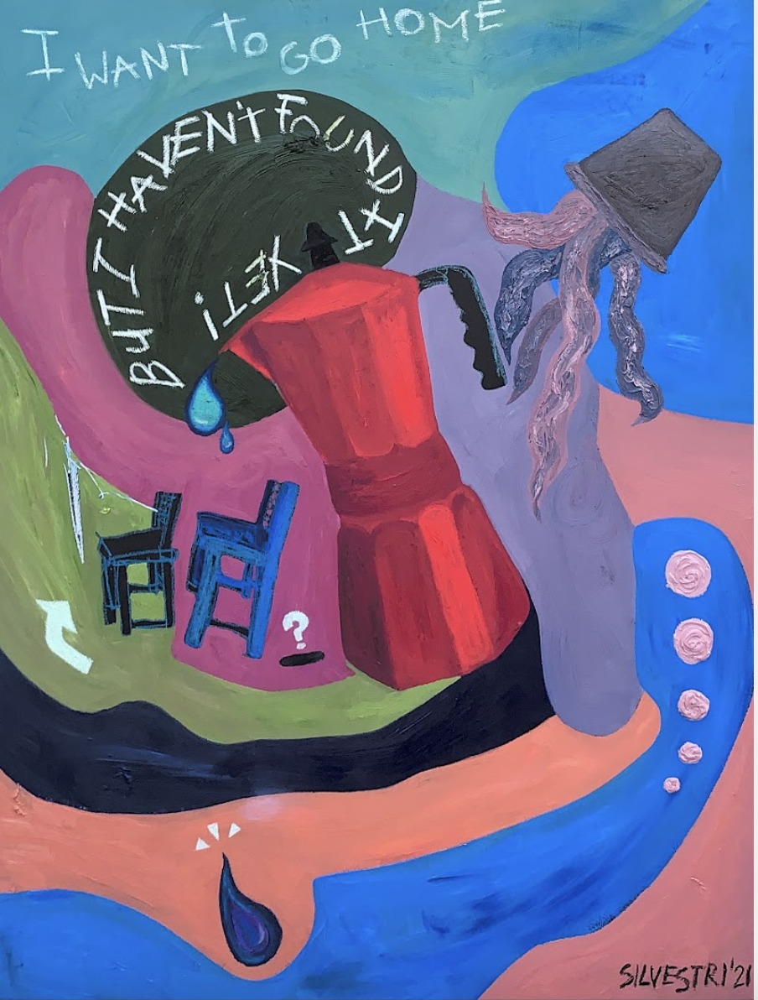
Stability has always been out of reach. I have moved to a new home more times than I’ve celebrated my birthday; I am more familiar with change than permanence. I feel at home when I’m on the road and at peace when everything I know is being replaced.
I love giving; I generally hate receiving. I love giving advice; I don’t want yours, though. I love giving gifts, but don’t you dare give me anything. I love giving you my energy and attention when I desire to do so but don’t give me yours unrequested. There are exceptions, of course.
Don’t get me wrong; I love most of my friends. They bring me the comfort and acceptance I lacked throughout most of my life. I pick them carefully and am honored to call them my close friends. Likewise with many of my family.
We could take a deep dive into my subconscious and attempt to figure out why this is the case. Most people hate change, hate leaving what they know behind, hate having to restart. I am by no means saying I’m special, or unique, or quirky because of this. I’m also not fucked up or messed in the head. It just is what it is.
Owning things feels burdensome. I don’t want to own anything I can’t get rid of within minutes. I don’t want anyone depending on me, either. That feels like employment; only you tend to lose money rather than gain it. Actually, it’s an unpaid internship. Who the fuck wants one of those? I don’t want to depend on anyone – that’s annoying. People are rarely readily available, and they can’t always fulfill my requests. I am only aware of what I am capable of – and I’m not even fully aware.
These feelings aren’t empowering. I know what you’re thinking – I’m running away from something. I’m not doing that. I’m just drained. Every time I move, I know that whatever I am leaving behind is long gone. That’s one less thought in my constantly buzzing mind. It’s a relief.
Maybe it’s fear. It is fear, fear of being sucked into the abyss that is routine, standardization, and never-ending cycles. The misconception is that comfort is settling, thus forever seeking the arousal of discomfort. I’m talking about the physiological and psychological state, not sex. You were close, but it’s not running away. It’s running towards fear. Either way, it’s some bullshit.
Inner peace isn’t what you think it is. Most of it is nonsense. You don’t have to love or respect everyone. That’s impossible. You’d waste most of your energy doing so. Plus, if we’re honest, not everyone deserves it. In reality, inner peace is coming to terms with your lack of omnipotence, omniscience, and omnipresence. You’re not a god to others, and you will never be one. The closest you’ll ever be to a god is within yourself. Even so, the validity of free will is debatable.
No running away or running towards. In general, I’m not a fan of running. I hate running. I have weak ankles, and overheating gives me rashes. I know this is physiological, but similar issues exist in my mind when I’m mentally running. Have you ever read ‘What I Talk About When I Talk About Running’ by Haruki Murakami? He’s good at running – the kind of running you want. I think of him often when I get the itch, the craving, the burning desire to run. Am I running for the right reasons? Running towards the positive arousal, instead of from the anxious arousal? Running to get away from fear, rather than due to it?
Those are some internal battles and I know I’ll lie to myself to cope more often than not. It’s learning to catch yourself in your lies and figuring out why the fuck you’re running.
It’s incredible how a mundane activity can carry so much weight and significance. Much like Eve from the garden of Eden, one of my issues can be directly traced back to picking fruit.
There is something ethereal about picking fruit from a tree. Picking fruit is easy – anyone of any age can do it as long as they have the coordination of their fingers. There’s not much thought that goes into picking fruit, you kind of just go for it. That’s how I wish I could live my life. Instead, I have to process every moment, every action, every scene and decide how to react, act, or respond. That’s not the point of this, though.
Did you ever read ‘The Giving Tree’? It’s one of my favorite childhood books. Shel Silverstein is a literary genius, and I am forever grateful that he was talented enough to convey such beauty to children. It’s not easy to talk to children in a meaningful and digestible way. Life’s like fruit; some are hard to peel, to bite, to eat. We all have our preferences.
One of my earliest memories as a child can be traced to the age of around 4 or 5. My nanny would take me on walks every so often and teach me how to pick fruit from a tree. I was so small, and looking up at the jam-packed branches felt like staring at another universe. It wasn’t magical; I’d be bullshitting you if I said that. Honestly, it felt a little alienating. She’d pluck a guava and hand it to me as if it were her life savings. As soon as I took a bite, she’d tell me it was full of worms. She taught me that seemingly innocent gifts could be malicious. Looking back, I realize she was the first person that broke my trust. There have been countless others since, but she didn’t have to start me off that young. I still don’t know how to trust. I may not remember her name, but I do carry that fear of trust with me.
Around the age of 5, I looked up at those pine-looking trees that weren't pine trees and thought they bore fruit. It didn’t – it housed a nest. Whether or not it was my fault, I cannot remember. I do recall seeing a cracked egg on the ground. A goner. He didn’t even get the chance to get his trust broken. At least I did.
At the age of 20, I flew to Los Angeles with my friend for spring break. We stayed at an Airbnb in Santa Monica – a beautiful neighborhood with homes in a style I’d never seen before. There was one orange tree in the backyard. During the five days that we were there, my friend would sleep in while I walked my dog. I’d try to pick an orange from the tree every single morning, but I couldn’t reach the branches. I tried using a broom, random sticks, and rocks. None of it worked, and that made me laugh. Here I am, in a stranger’s backyard, trying to take their fruit that very clearly does not want to be taken. I respected that tree, and I’d like to think it respected me.
Eve fucked up by eating that apple. Whether it’s factual, a story, or a metaphor, I don’t care. I probably would’ve done the same. I don’t blame her. God and that snake shouldn’t have been testing her like that. Neither should my nanny have tested me. At least I can relate to the bible in one way.
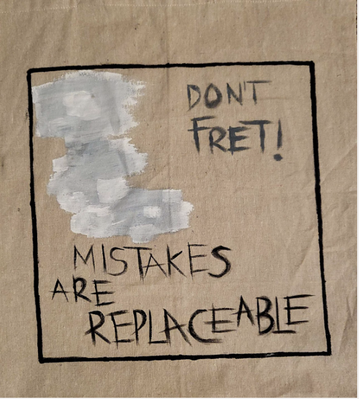
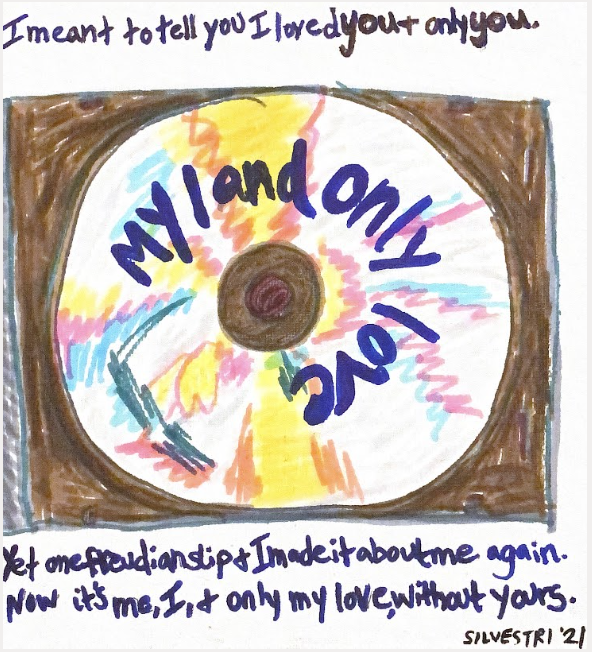
I always underestimate the satisfaction that alone time can bring me. I forget how much I appreciate being alone until I take the time to do so. I work for, and with other people, I take classes with other people, and I live with other people. I don’t have much time to be alone.
We’re all in the search for a partner, it doesn’t matter whether it’s a long-term or short- term one. I’m usually stuck somewhere in between. I don’t want one to stick around forever – forever is too long. I also don’t just want one for the night – it seems like a waste. I don’t want just anyone either. They can’t be ugly or annoying. They can’t be too clingy or too aloof. They can’t be too similar or too different to me. They have to be just right. I’ve never met anyone like that, but I give people a shot anyway.
In theory, I have the right idea. In practice, not so much. The choices I’ve made in my romantic life have been subpar, to say the least. I’ve been approaching them the wrong way.
“I wasn’t necessarily looking for happiness, just less pain.” Have you ever listened to ‘Leray’ by Trippie Red? It’s a soft-spoken intro track for his album. This particular line hit me hard. I’ve forgotten to look for happiness and have just been running from pain.
I claim I’m lonely every once in a while. I’m really not that lonely – if anything, I need to be alone more often. Yet, I’ve continued to pursue partners that will never be able to fulfill my desires. We’re constantly told we need to find that other half; someone else will complete us. I believed that for some time.
The last time I felt comfortable with a partner was when we wanted absolutely nothing to do with each other. In a neutral way, not a negative way. We just didn’t care. I felt alone, and that’s exactly what I wanted. I wanted to be alone so badly that I sought partners whose empty presence made me feel my presence stronger.
I’m sitting at the beach with a beer in my hand, alone. What a beautiful realization that you can be alone on your own. Just takes some practice.
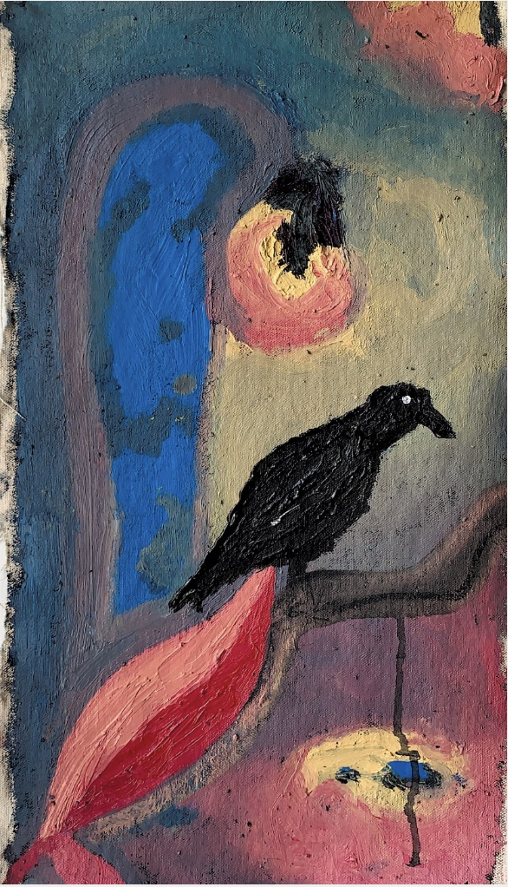
I’m a fan of the Irish exit. Grammarly tells me this term is outdated, so I’ll rename it as the vero exit. It’s my preferred method of exiting most locations and events, particularly parties and gatherings. The vero exit is leaving without saying goodbye. Sometimes it’s not necessary to say goodbye.
Loneliness is an overwhelming feeling. I find myself torn at the cusp of participation and exclusion. I don’t particularly care about what most people have to say, and I don’t particularly want to be heard and understood by strangers. It’s a bit paradoxical, I know. I want to meet people, and I want to date. Yet, I don’t want them to know me – at least not right away.
I constantly find myself wanting more and wishing I had less. I want stronger connections, yet I wish fewer people knew me. I want someone to love me, yet I wish I didn’t have to expose myself to be loved. I find myself knocking at my own door, wishing I’d open up to myself. I know myself, yet I am so self-aware that I know I’m the last person who’ll know how I feel.
It’s not ideal. Let me in. I should be the first to know how I feel, yet it feels like an expedition. I don’t know what I’ll find, and others don’t know what to expect. I keep people on their toes because they don’t know how I feel and can’t express it.
I could tell you that it’s the way I was raised, and that’s why I’m emotionally inept. I mean, it’s true. It’s also true that I’ve been aware of this for the past few years and have been trying to fix it. Not hard enough, evidently. It’s hard; I know you know. You’re probably not good at this either. Years of being lied to by others and by yourself have led to this point. You don’t know how you feel or why. That’s not healthy, but it’s not abnormal.
The vero exit can be considered a bad habit or an assertion of power, depending on who you ask. I don’t give a fuck. It’s just easy. No goodbyes, no promises. Many don’t like that, though. People like closure. I can’t give them that, and I’ve never been able to.
It’s easy to exit abruptly because it requires little emotional thought and consideration. It seems easier, but it isn’t. At the end of the day, I still feel lonely and deprived of affection. If I was going to feel like this anyway, I should’ve at least given closure to those who wanted it.
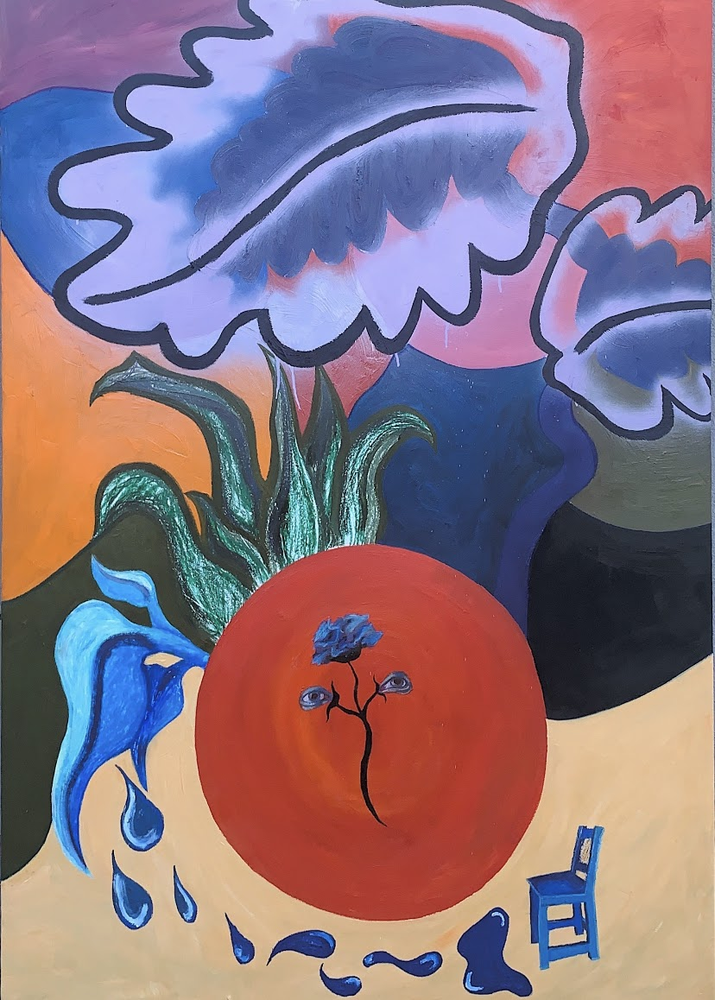